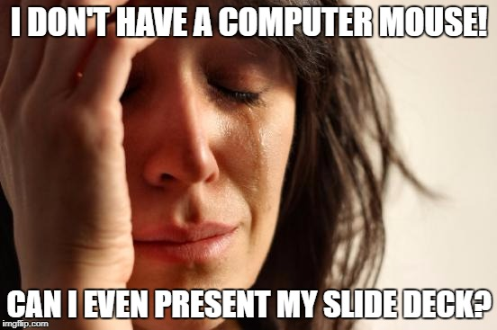

Last week I wrote on the eternal verities of R Markdown. This post covers a slide presentation package in R: Xaringan slides, one of the many awesome report formats enabled by R Markdown.1 With Xaringan, incorporating slides into my workflow becomes a natural and critical step in reproducible data science.
“Notably, you do not have to be a coder to take advantage of this approach. Xaringan slides can be authored with the same ease as with any other normal or more proprietary slide tools.”
First some some fun facts about presentation software and slide decks. Did you know one of the early versions of PowerPoint was released for the MS-DOS operating system?2 I might wonder about the authoring interface for MS-DOS::PowerPoint. After all, if you don’t have a mouse can you even present?
Authoring my slide presentations with Xaringan (pronounced Share-in-gan) is easy because slides are composed in R Markdown. Since the Xaringan package is optimized for RStudio, it’s also easy to maintain versioning and sharing via Git/GitHub. The output slides are actually HTML and are therefore portable. They can be hosted on a flash drive or a laptop for presentation and it’s simple to host slide decks on any website. Sharing a slide deck requires only a web browser, not even a web server. I generate my slides from analysis scripts and then integrate the output and hosting at my own website.4 No more wondering if I have an accessible back-up version of my slides.
The editor pane and authoring method is well integrated into R and RStudio so inserting analysis and visualization is amazingly simple. If I update my analysis, an output report is automatically produced. This integration reduces post-analysis report editing because the report is derived directly from the analysis. Analysis becomes part of the slide authoring process and stock images are easy to include. In fact any slide object can be inserted with ease – just like any presenter tool. Taken as a whole this integration helps maintain continuity between analysis and the final report.

Visually the default slide style is spare, almost austere, but given how most slides are too cluttered5 I find this an inspiring advantage. The installed Xaringan package comes with a standard CSS style sheet that can be used without modification or can be customized to suite personal needs.6
I will note that I was a bit daunted by the CSS. But after composing a few slides decks I was inspired to make a custom CSS style sheet to reflect the Duke color palette. I now use that CSS as my base template and modify as necessary. My customization with the Duke color palette is now a second CSS file and can be called with any Xaringan slide deck. The whole package7 is available on Github and ripe for collaboration. Feel free to clone or fork.
To conclude, this slide package ensures the authoring phase becomes part of a more nimble and reproducible life cycle (analysis, authoring, storing, and archiving) while enabling you to document your slides with literate code. Notably, you do not have to be a coder to take advantage of this approach. Xaringan slides can be authored with the same ease as any normal or more proprietary slide tools. Just spend 20 seconds learning R Markdown and you’ll be ready to increase your RQ (“Reproducibility Quotient”) in no time.
Last points. I suspect using Xaringan Slides is far more satisfying than MS-DOS for PowerPoint ever was, especially when used with RStudio. However the two authoring systems must have some striking similarities. I’m thinking of how UNIX has influenced so much of modern computing. And if you’re wondering, my mouse remains a vital and relevant partner in all my slide deck rituals. Thanks be to Engelbart.8
To be complete: library(Xaringan) + R Markdown + R + RStudio. For more information, see R Markdown↩︎
http://www.berkeley.edu/news/media/releases/2005/03/08_byrne.shtml↩︎
For early versions of PowerPoint, an early example project used this as an example↩︎
I build my website – http://johnlittle.info – via Blogdown. Blogdown is another wonderful innovation leveraging R Markdown and R Studio. I’ll post about that in the future.↩︎
Video: Learn CSS in 12 Minutes↩︎
It’s not actually a package, only a repo. I’ll have to work on that.↩︎